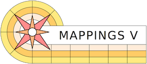

An astrophysical plasma modelling code.
MAPPINGS V Documentation
https://bitbucket.org/RalphSutherland/mappings
https://mappings.anu.edu.au
Contact:
Ralph.Sutherland@anu.edu.au Creative Commons v4.0 International
By Attribution, Share Alike
CC-BY-SA-4.0Intl https://creativecommons.org
Science and Development
1976 -- 2022+ Ralph Sutherland,
Michael Dopita, Luc Binette, Ian Evans,
Brent Groves, David Nicholls,
Adam D. Thomas, Jin Yi-Fei, Knox Long
Quickstart Documentation
Documentation for MAPPINGS V is minimal, and is currently being expanded and upgraded. Essential installation information is in the ReadMe files and below. An initial cookbook guide to get a first photoionisation model is provided as the larger documentation is being constructued.Quick Start Compiling and Running:
(note on some systems use gmake instead of make)
> cd mappings/src
> make build
or on multi-cpu systems a parallel build is faster:
> make -j build
> cd ../lab
> ./map51
The Local Mappings directory structure
(see advanced usage documentation for shared and distributed options)
mappings_V/
src/
mastercode/
includes/
workcode/
lab/
data/
abund/
scripts/
atmos/ (optional)
docs/
documentation files and support directories
addons/
additional abundance preference files and options (see advanced use sections)
misc/
lines/
blur/
dered/
fundamental_constants/
Key Directories and Files
- lab/ This is where the models are made and run. The runtime files such as map.prefs are here and the essential data directory with the runtime data files.
- map51: The executable, also sometimes built with other names
- map.prefs Essential startup data - must be present.
- mapStd.prefs A standard 16 atom startup in case map.prefs is lost for any reason, can be copied and renamed map.prefs if needed
- mapFull.prefs A full 30 atom startup in case map.prefs is lost for any reason, can be copied and renamed map.prefs if needed
- data/: Contains the atomic data for MAPPINGS V. Read at runtime in mapinit.f. Essential and must be present and complete.
- abund/: A set of useful abundance settings that can be read interactively during a run.
- atmos/: An optional set of useful radiation source files and stellar atmosphere models. Optional. * scripts/: A collection of useful of UNIX shell and MAPPINGS scripts for testing and running mappings models when not running interactively.
- src/ Contains the code area and the Makefile(s). There is a standard makefile for bash shell and gfortran and alternatives in a subdirectory for other setups for use as templates. All the commonly adjusted user parameters are near the top of the makefile.
Primary Reference Documentation
Sphinx and Cookbooks
Note: Documentation is an ongoing effort, and contributions are welcome.
At present the main resources are as follows:
- An initial getting started tutorial version is cookbook which describes how to install MAPPINGS and run a first photoinisation nebula model.
- A Sphinx
repository, which ultimately will be the main documentation for
the MAPPINGS codes
- This is part of the MAPPINGS V distribution. All of the files are tracked in git
- (Ultimately we want this avalialble on ReadtheDics)